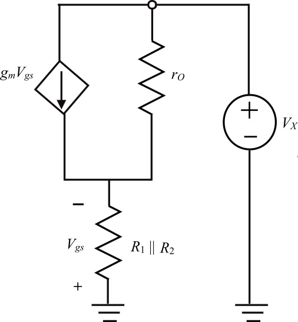

(a)
Refer to the circuit diagram of feedback current amplifier in Figure P10.65 in the textbook.
Write the formula for .

Substitute  for and
for and  for in the equation.
for in the equation.

(a)
Refer to the circuit diagram of feedback current amplifier in Figure P10.65 in the textbook.
Write the formula for .
Substitute for and for in the equation.
From the Figure, Find the voltage  using ohm’s law.
using ohm’s law.
Substitute  for and for in the equation.
for and for in the equation.
The drain current  is.
is.
(b)
We know that.
Also, so
Write the formula for trans-conductance.
Substitute for  and
and  for
for  in the equation.
in the equation.
Output resistance  is,
is,
Substitute  for
for  and for in the equation
and for in the equation
Thus output resistance is .
(c)
Draw the  circuit for Figure P10.65.
circuit for Figure P10.65.
Figure 1
Use ohm’s law to write the expression for voltage  .
.
Use ohm’s law to write the expression for voltage
Write the expression for current flows through the resistor.
Substitute for  and for in the equation.
and for in the equation.
Substitute corresponding values.
Input resistance of the circuit is,
Now, find RO.
Derive the expression for output resistance .
.
…… (1)
 …… (2)
…… (2)
Substitute equation (1) in (2).
Define output resistance

Substitute corresponding values.
(d)
Draw the equivalent circuit diagram of the output side.

Figure 2
From Figure 2, convert the current source into voltage source by applying source transformation technique.
Figure 3
Write the formula for feedback factor .
.
Loop gain  is,
is,
Closed loop gain of the amplifier is,
Substitute corresponding values.
(f)
Input resistance of closed loop amplifier.
Substitute corresponding values.
Output resistance seen through the load resistor .
Output resistance of the feedback amplifier is,
Substitute corresponding values.
Thus, output resistance of the feedback amplifier is .